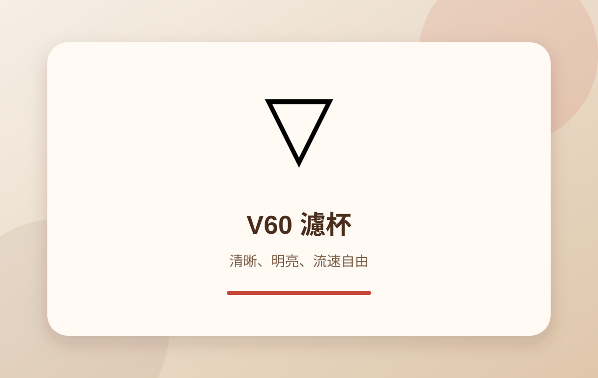
V60
錐形、大底孔與螺旋肋骨，流速自由度高，能呈現明亮酸質與清晰層次。
難度中～高
研磨中細
焙度淺～中
風格乾淨明亮
器具本身不會自動讓咖啡變好喝，但能協助控制研磨、溫度、時間、流速與粉水比。
研磨 磨豆機與刀盤
沖煮 濾杯、浸泡器具與義式機
注水 手沖壺與熱水設備
測量 電子秤、溫度計與濃度計
感官 杯測杯與杯測匙
保養 清潔刷、清潔粉與替換零件
研磨粒徑會直接影響接觸面積與水流阻力。顆粒分布越集中，越容易穩定控制萃取。
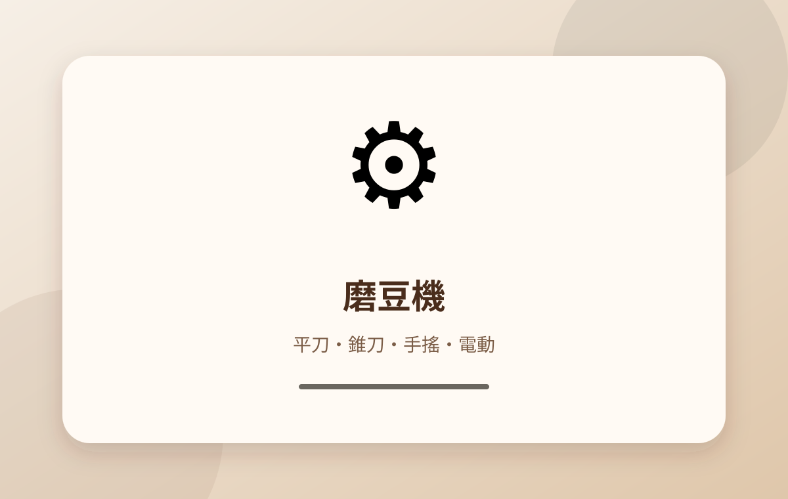
顆粒分布通常較集中，風味輪廓清楚，常見於商用或高階家用機種。
傾向：乾淨度、層次、明確酸質。
結構緊湊、低轉速設計常見於手磨與家用電磨，口感通常較厚實。
傾向：甜感、醇厚度、易操作。
濾杯的形狀、肋骨、底孔與濾紙會共同改變排氣、流速與水粉接觸方式。

錐形、大底孔與螺旋肋骨，流速自由度高，能呈現明亮酸質與清晰層次。
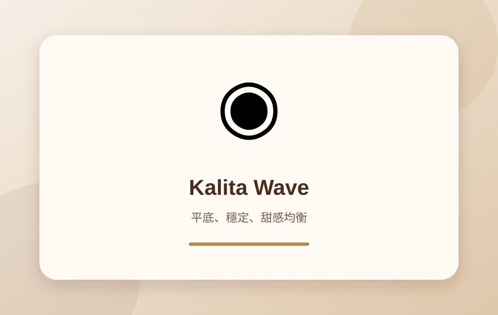
平底三孔與波浪濾紙讓粉層較均勻，流速穩定，甜感與平衡性突出。
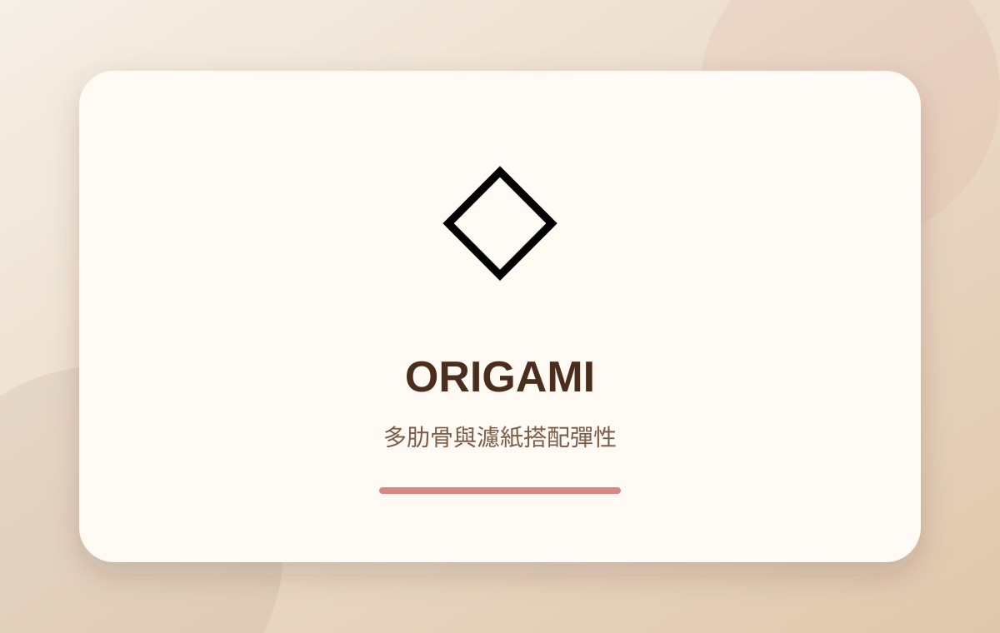
大量垂直肋骨，可搭配錐形或波浪濾紙，能調整流速與風味走向。
| 結構 | 水流特性 | 常見風味 | 適合使用者 |
|---|---|---|---|
| 錐形大孔 | 流速受注水與研磨影響大 | 清晰、明亮 | 喜歡調整參數者 |
| 平底多孔 | 粉層較均勻、流速穩定 | 甜感、平衡 | 新手與日常沖煮 |
| 可換濾紙 | 可在錐形與平底特性間調整 | 多變、可塑性高 | 進階玩家 |
浸泡式讓咖啡粉與水完整接觸，操作容錯率高；壓力式則可縮短過濾時間並增加變化。
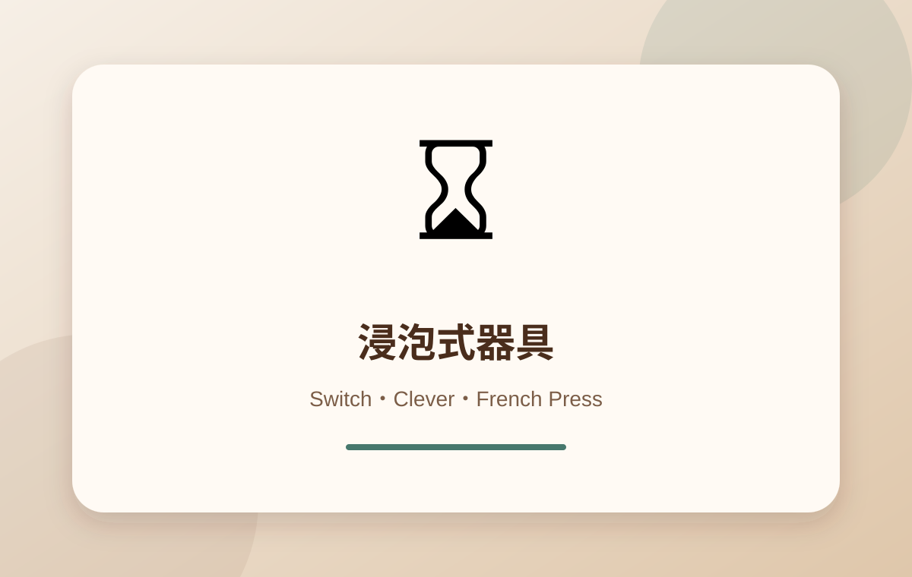
先浸泡後放水，可降低注水技巧影響。適合追求甜感、穩定與簡易操作。
金屬濾網保留較多油脂與細粉，口感厚實，但乾淨度較低。
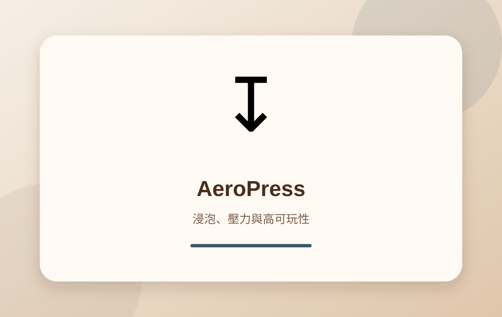
結合浸泡、攪拌與手動壓力，可從濃縮型到清爽型自由變化。
義式萃取需要精確控制研磨、粉量、壓粉、溫度、壓力與流量，設備穩定性相當重要。
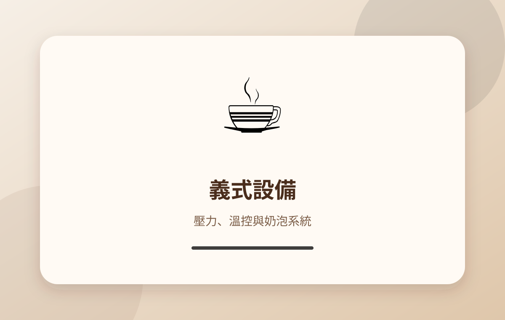
手沖壺、濾紙與電子秤看似配角，卻直接決定操作精度與重現性。
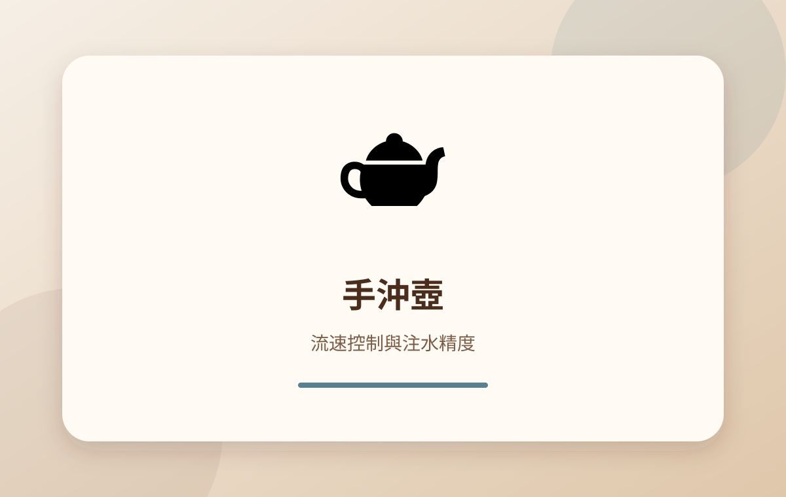
細口壺適合穩定控制流速；壺嘴角度、重心與握把會影響操作手感。
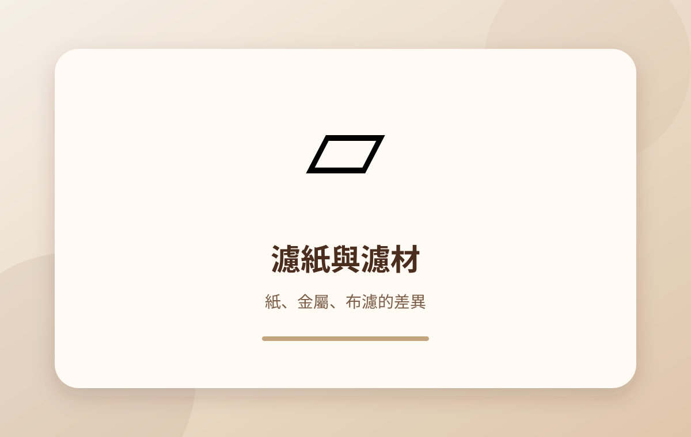
紙濾乾淨；金屬濾網保留油脂；布濾兼具厚實與柔和，但保養需求較高。
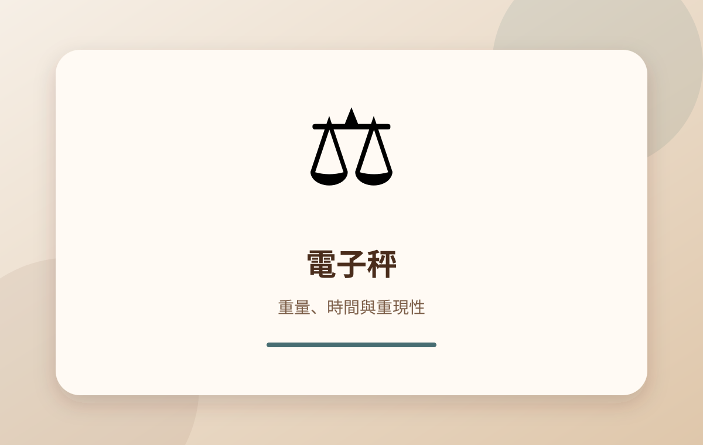
至少應具備 0.1 g 精度與計時功能；即時流速顯示可協助進階控制。
濃度計能測量飲品中可溶物比例，但數字必須搭配感官結果判讀。
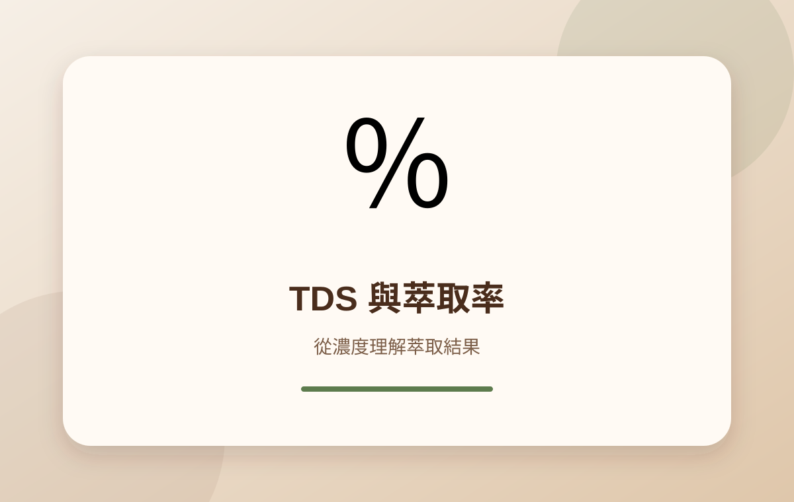
萃取率 EY（%）＝ 飲品重量 × TDS ÷ 咖啡粉重量
例：成品 240 g、TDS 1.35%、粉量 18 g，萃取率約為 18%。
數值可協助比較配方，但苦、澀、酸、甜與香氣仍要靠品飲確認。
杯測的目標是讓不同樣品在相同條件下比較，因此器具規格與操作一致性很重要。
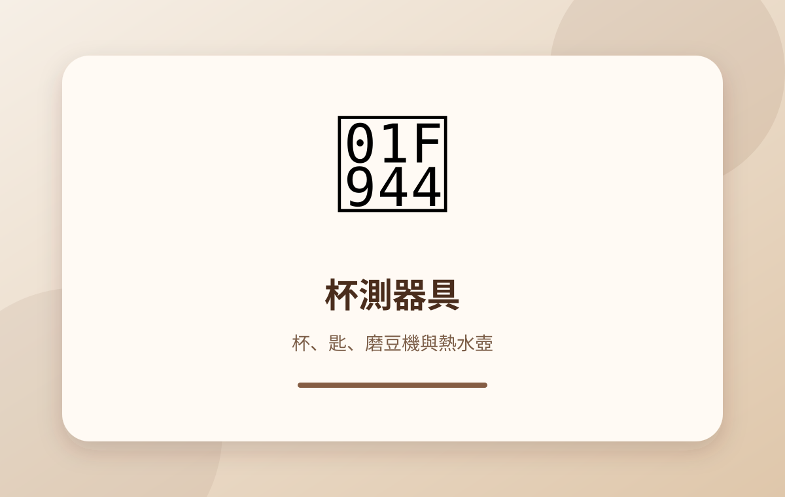
杯測杯、杯測匙、磨豆機、熱水壺、電子秤、計時器、吐杯與清潔水。
各杯粉量、注水量、水溫、研磨與時間一致，才能降低器具差異造成的偏差。
咖啡油脂會氧化並附著在刀盤、濾網與沖煮頭，長期累積會產生陳舊與油耗味。
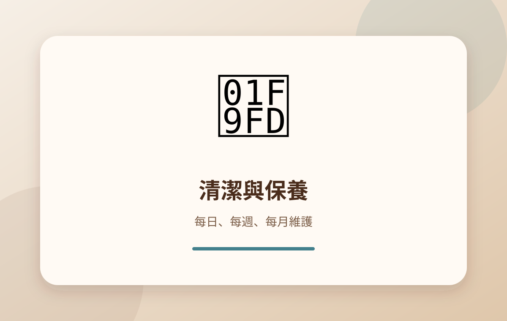
清洗濾杯、濾網、咖啡壺；擦拭蒸氣棒；倒空殘水與咖啡渣。
清潔刀盤與粉道；義式機反沖洗；檢查膠圈、濾網、壓力與水垢。
有限預算應優先投資磨豆機，再補齊電子秤、濾杯與手沖壺。
| 預算層級 | 建議組合 | 適合需求 |
|---|---|---|
| 約 NT$3,000 | 入門手磨＋V60／平底濾杯＋一般電子秤 | 建立基本沖煮習慣 |
| 約 NT$8,000 | 中階手磨或入門電磨＋控溫壺＋0.1 g 電子秤 | 提升研磨與溫度穩定性 |
| 約 NT$15,000 | 高階手磨／中階電磨＋多種濾杯＋流速秤 | 比較器具與豆種差異 |
| NT$30,000 以上 | 高階磨豆機、溫控設備或入門義式系統 | 進階研究或義式需求 |
不是絕對必要，但細口壺能更容易控制流速與落水位置，對分段注水與小水流特別有幫助。
濾杯價格通常較低，而磨豆機對風味穩定性的影響更大，因此預算應優先保留給磨豆機。
沒有絕對好壞。金屬濾網保留油脂與細粉，口感厚實；紙濾則更乾淨、明亮。
不一定。高價器具通常提供更好的穩定性、耐用度或操作精度，但正確配方、用水、咖啡豆新鮮度與技術同樣重要。
內容參考 Specialty Coffee Association（SCA）沖煮、杯測與感官相關公開教材概念，以及各類器具通用結構與操作原理整理。
圖片說明：本頁所有圖片均為本站製作的 SVG 教學示意圖，存放於 images/ 資料夾，不使用外部圖片網址，也不直接重製品牌官方照片。
不同品牌與型號規格可能不同，實際操作與保養方式請以製造商說明書為準。